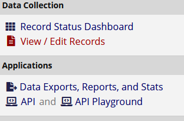

redcaptools contains home-grown functions for working with REDCap data in R.
Installation
You can install the development version of redcaptools from github with:
remotes::install_github("CTU-Bern/redcaptools")Or from CTU Bern’s package universe
install.packages("redcaptools", repos = "https://ctu-bern.r-universe.dev")Export data from REDCap
REDCap offers (at least) two approaches for exporting a projects data - throught the web interface via clicking buttons, and the API, which allows programmatic access to a lot more information than is available through the web interface. In order to use the API, a token is required. The API token can be requested from the projects API page, accessible from the link in the applications section of the menu on the left side of the page.

If you do not see that link, consult with whoever is in charge of user management for the project to give you access to it.
Once you have access, you can request a token, which a system administrator must approve. Once approved, the token is shown on the API page. Now you have everything to download data through the API. Because your token is essentially your username, password and a reference to a specific project, extra care must be taken with it. The httr package has a vignette on managing secrets, which is relevant to the API token.
The standard download can be replicated via
# the URL ir the same as the website just with '/api/' on the end
url <- "https://redcap.domain.something/api/"
token <- readLines("path-to-file-containing-token") # or some other method
d <- redcap_export_tbl(token, url, "record")More interesting is the redcap_export_byform function, which returns a list of dataframes, where each element of the list is a specific eCRF from the database.
l <- redcap_export_byform(token, url)Some of the available metadata stored in REDCap is available via the redcap_export_meta function, including the data dictionary, which can also be downloaded via the website.
m <- redcap_export_meta(token, url)Once you have the data and metadata, the redcap_prep function can be used to reformat the data - convert variables to date, POSIX, factors, etc as appropriate.
prepped <- redcap_prep(d, m$metadata)
prepped_list <- sapply(l, redcap_prep, metadata = m$metadata)